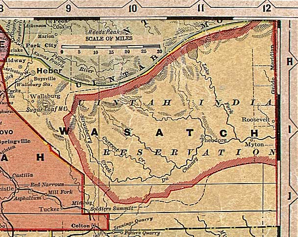

Wasatch County, Utah, ca. 1908
From "Deseret Evening News New Home Library Wall Chart" (reprinted with permission)
Summit County
All of Utah
Salt
Lake
and
Utah
Counties

Uinta
County
Carbon County
Note:
This includes present-day Duchesne County (east part of the map)